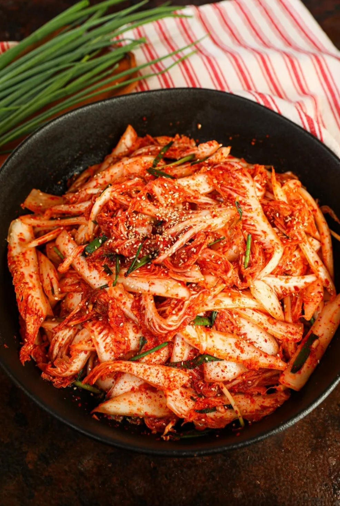
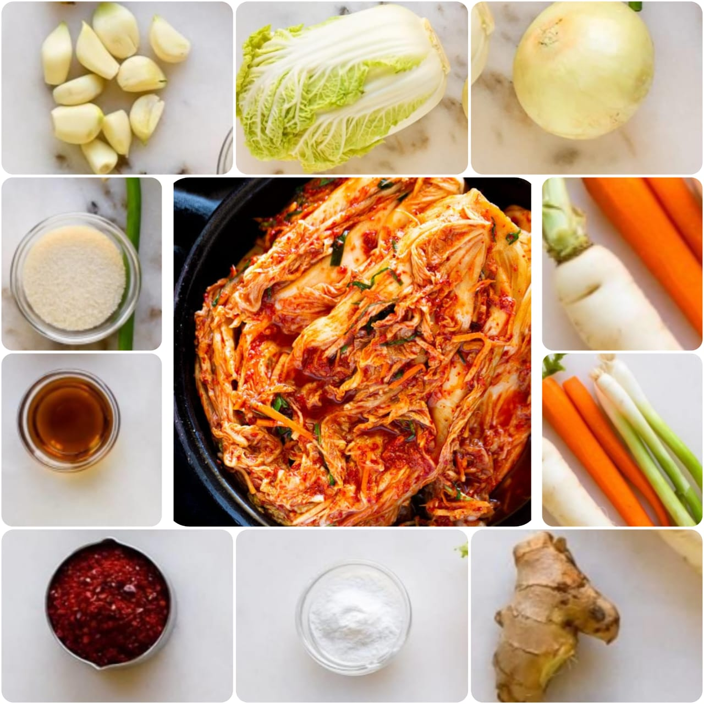

Kimchi
Home
Kimchi, is a traditional Korean side dish of salted and fermented vegetables, such as napa cabbage and Korean raddish. A wide selection of seasonings are used, including gochugaru, soring onions, garlic, ginger, and jeotgal,etc. Kimchi is also used in variety of soups and stews. As a staple food in Korean cuisine, it is eaten as a side dish with almost every Korean meal.

Ingredients
1 napa cabbage(about 2 pounds)
1/4 cup sea salt or kosher Salt
Water
1 tbsp grated garlic(5 to 6 cloves)
1 tbsp grated peeled fresh ginger
1 tsp granulated sugar
1 to 5 tbsp Korean red pepper flakes
8 ounces Korean raddish
4 medium scallions

Nutrition Facts
Calories 350
Total Fat 0.0g
Cholesterol 0mg
Sodium 250mg
Total Carbohydrate 7.0g
Vitamin C 15%
Calcium 25%
Procedure
Cut the cabbage lengthwise through the stem into quarters. Cut the cores from each piece. Cut each quarter crosswise into 2-inch-wide strips.
Place the cabbage in a large bowl and sprinkle with the salt. Using your hands, massage the salt into the cabbage until it starts to soften a bit. Add enough water to cover the cabbage. Put a plate on top of the cabbage and weigh it down with something heavy, like a jar or can of beans. Let stand for 1 to 2 hours.
Rinse the cabbage under cold water 3 times. Set aside to drain in a colander for 15 to 20 minutes. Meanwhile, make the spice paste.
Rinse and dry the bowl you used for salting. Add the garlic, ginger, sugar, and fish sauce, shrimp paste, or water and stir into a smooth paste. Stir in the gochugaru, using 1 tablespoon for mild and up to 5 tablespoons for spicy (I like about 3 1/2 tablespoons); set aside until the cabbage is ready.
Gently squeeze any remaining water from the cabbage and add it to the spice paste. Add the radish and scallions.
Using your hands, gently work the paste into the vegetables until they are thoroughly coated. The gloves are optional here but highly recommended to protect your hands from stings, stains, and smells!
Pack the kimchi into a 1-quart jar. Press down on the kimchi until the brine (the liquid that comes out) rises to cover the vegetables, leaving at least 1 inch of space at the top. Seal the jar.
Place a bowl or plate under the jar to help catch any overflow. Let the jar stand at cool room temperature, out of direct sunlight, for 1 to 5 days. You may see bubbles inside the jar and brine may seep out of the lid.
Check the kimchi once a day, opening the jar and pressing down on the vegetables with a clean finger or spoon to keep them submerged under the brine. (This also releases gases produced during fermentation.) Taste a little at this point, too! When the kimchi tastes ripe enough for your liking, transfer the jar to the refrigerator. You may eat it right away, but it's best after another week or two.
Expert Guide
Back ←
Scroll to Top ↑